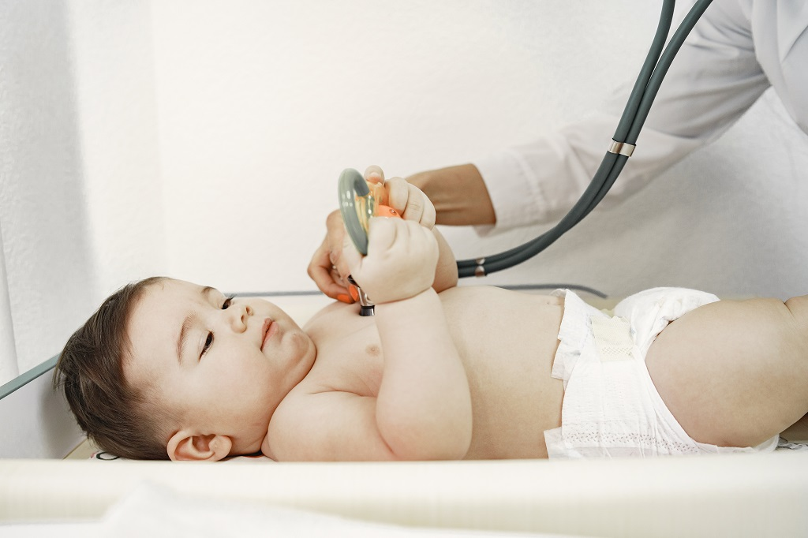

Certificado por el Consejo Mexicano de Pediatria
Tamiz Cardiaco
¿Qué es?
Es un estudio que mide el oxígeno en condiciones de movimiento y sirve para detectar oportunamente anomalías cardiacas estructurales congénitas que cursan con hipoxemia (oxigeno bajo).
¿A qué bebés se les debe de realizar?
A todos los recién nacidos, ya que como se mencionó es para detectar oportunamente.
¿Cómo se realiza?
Con aparatos de última tecnología especializados en el cuidado de los bebés, se coloca un sensor primeramente en la mano derecha para registrar por un minuto las medidas y después se coloca en el pie. Todo esto sin causar algun tipo de molestia o dolor
Tamiz Auditivo
¿Qué es?
Un estudio de medición auditiva, el cual debería realizarse a todo niño, ya que los defectos auditivos muchas veces no son evidentes.
¿Por qué debería realizarse?
La hipoacusia es el déficit neurosensorial más frecuente. El 50% de los casos se asocia a causa genética. El 50% ambiental que cursaron con factores de riesgo como:
¿En qué consiste?
Con aparatos de última tecnología especializados en el cuidado de los bebés, se coloca un audífono en el oído del bebé unos segundos y de esta manera se registra si existe una disminución auditiva. Todo esto sin causar algun tipo de molestia o dolor